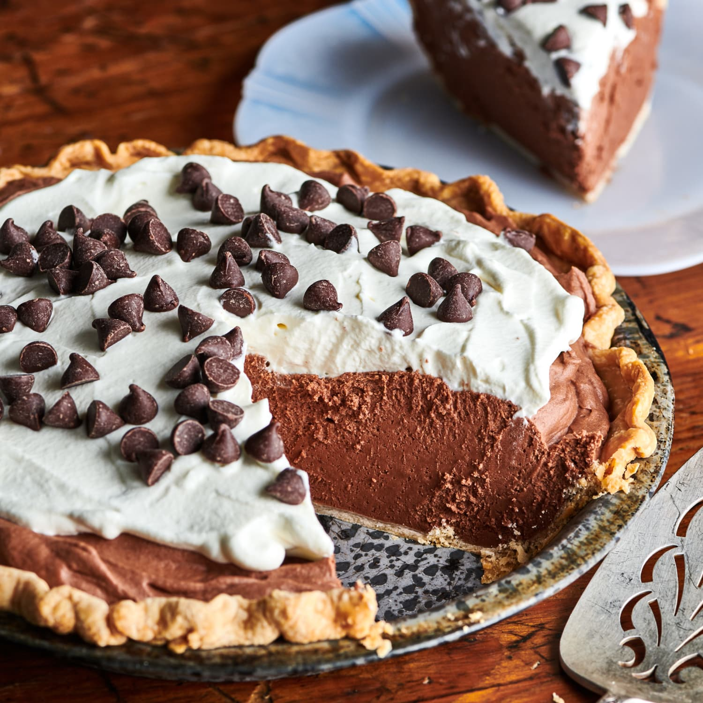

The most easy chocolate pie

Ingridients
- 1 whole pie crust, baked and cooled (or can use Oreo or graham cracker crust)
- 1 1/2 c.sugar
- 1/4 tsp.salt
- 3 c.whole milk
- 4 whole egg yolks
- 6 1/2 oz.weight bittersweet chocolate, chopped finely
- 2 tsp.vanilla extract
- tbsp.butter
- Whipped cream, for serving
Directions - Step by Step
- Combine the sugar, cornstarch, and salt in a medium saucepan. Stir or whisk together.
- Pour in milk and egg yolks, and whisk together.
- Stir over medium heat until the mixture just barely comes to a boil and becomes thick, about 6-8 minutes (maybe less, maybe more; just watch it!) The second it starts to bubble and thicken (note: It should be thick like pudding!) remove it from the heat. Add the chocolate, vanilla, and butter, and stir until everything is beautifully combined.
- Pour the pudding into the pie crust (if there is extra, spoon it into small dishes) and place in the fridge to chill for 4 hours uncovered.
- Cut into slices and serve with whipped cream!